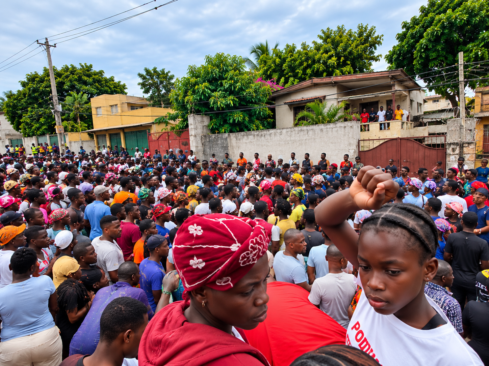

Défense des droits
Promotion et protection des droits fondamentaux, documentation et plaidoyer pour les populations vulnérables.

Organisation haïtienne de droits humains
Depuis sa création, SKL promeut, protège et défend les droits humains, soutient les victimes et accompagne les communautés les plus vulnérables.
Nos repères
Promotion et protection des droits fondamentaux, documentation et plaidoyer pour les populations vulnérables.
Assistance aux victimes, appui juridique et suivi des lieux de détention.
Formation, éducation civique et développement d'une nouvelle génération de leaders.
Domaines d'intervention
Promotion, protection et documentation des droits fondamentaux.
Assistance juridique, accompagnement des victimes et plaidoyer.
Protection des enfants et des groupes vulnérables.
Protection des migrants, retournés, réfugiés et personnes déplacées.
Santé communautaire, eau potable, assainissement et assistance humanitaire.

Rév. Père Gardy Maisonneuve
Mot du Directeur Exécutif
Inspirée par l'héritage du Révérend Père Karl Lévêque, notre organisation travaille avec indépendance, professionnalisme et dévouement au service des communautés les plus vulnérables.Lire le message complet
Actualités
SKL a mis en œuvre une initiative de terrain pour accompagner les familles et soutenir la reprise communautaire.
Assistance juridique et plaidoyer pour les résidents de Tabarre affectés par des mesures de démolition près de l'Ambassade des États-Unis.
SKL contribue au développement et au renforcement du mouvement haïtien des droits humains.
Réseaux et partenaires